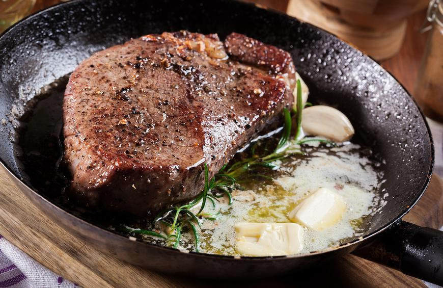

Pan-Seared Steak
A perfectly seared steak with aromatic herbs, garlic, and butter for restaurant-quality results at home.
From quick weeknight dinners to gourmet weekend projects
A perfectly seared steak with aromatic herbs, garlic, and butter for restaurant-quality results at home.
Flavorful shrimp in a creamy coconut curry sauce with aromatic spices. Quick and delicious!

Luxurious homemade ravioli filled with fresh lobster and ricotta, served in a delicate cream sauce.
Crispy-skinned salmon with a perfectly flaky interior, served with fresh kale and apple salad.

A hearty and healthy salad with massaged kale, sautéed mushrooms, and a tangy horseradish dressing.